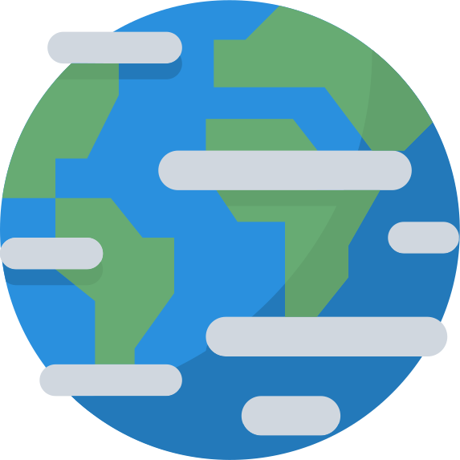

 Земля Третья планета от Солнца — это наша Земля. Она образовалась около 4,5 миллиарда лет назад, и примерно в то же время получила единственный и хорошо известный нам спутник – Луну. Луна стабилизировала земной наклон и стала причиной возникновения на Земле приливов. Всем хорошо известно, что мы живем на этой планете. Поэтому ответ на вопрос «Какая планета от Солнца третья?» сможет угадать даже первоклассник. Земля единственная из всех планет земной группы содержит большие запасы воды и имеет атмосферу, содержащую свободный кислород. Все это сделало возможным существование на ней более 8,7 миллиона видов живых организмов. Третья планета Солнечной системы обладает большей плотностью и размерами по сравнению с Венерой, Марсом и Меркурием. Радиус Земли составляет в среднем 6371,16 км. Благодаря наличию сильного магнитного поля, создаваемого ядром из расплавленного железа, Земля защищена от влияния звездной радиации. Земля делает полный оборот вокруг Солнца по окружности за 365,25 суток. Средние солнечные сутки составляют 24 часа.